Background
Story time
Long ago, in a not-too-distant past, Spotify had two separate tools: one for artists and one for labels. As the platform grew, the lines between artist needs and label needs blurred as new capabilities were released. A decision was made to merge the two tools into one — named Spotify for Artists — which, ironically, prioritized the needs of labels. Are you confused yet? Bear with me.
At the time, teams were so focused on moving features into this new service that nobody stopped to think about where those features should actually live. That responsibility fell on product teams already stretched thin just getting their key features represented. Years passed. Spotify grew into the behemoth it is today. New features shipped. The IA got messier. The pain customers felt only got worse.
Problem
The navigation was failing customers
The primary navigation was bursting at the seams — on small enough screens, content was literally overlapping other content. The side navigation conflated artist views with global views with user-level administrative actions. It was a mess, and it was only going to get worse as the product scaled.
It became clear that while we had many aspirations for the platform, we couldn't achieve any of them without a clear information architecture and navigation.
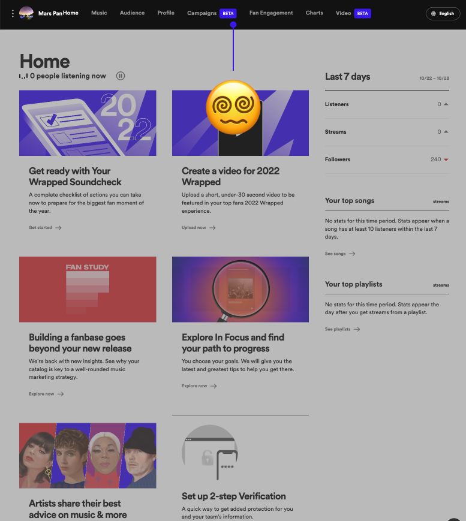
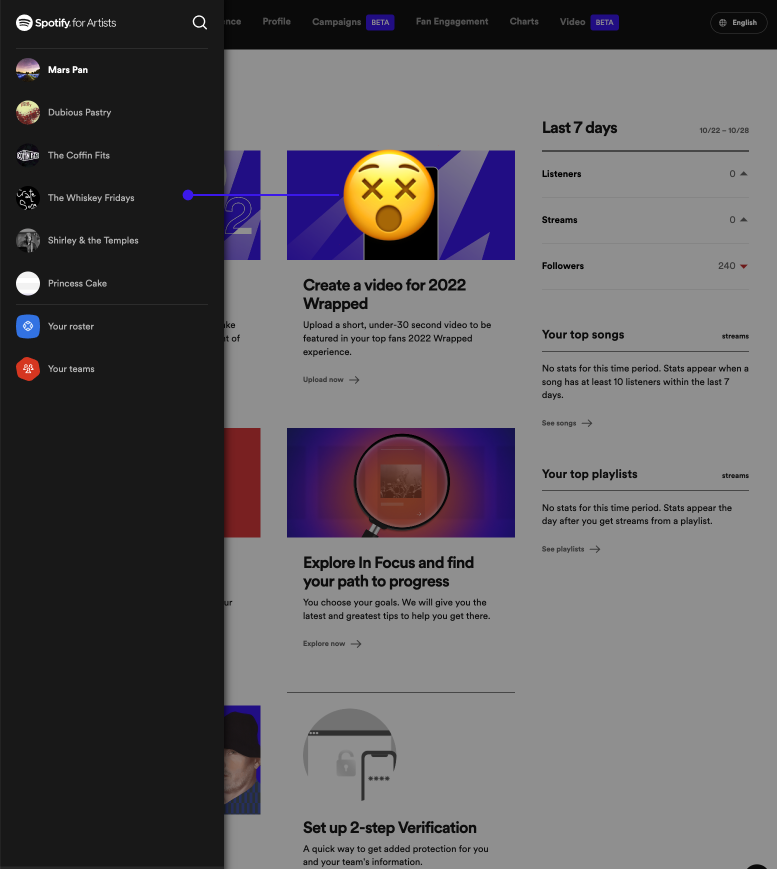
My Role
Senior designer and platform design owner
I was the senior designer and design owner for the Spotify for Artists platform team. I worked with one UX writer on content strategy, one senior UX researcher who led research with customers, and one senior PM.
Understanding the Core Users
Three types of users
🧑🏽🎤
Artists
Need to understand how to grow their listener base and earn a living off their work through the many tools at their disposal on S4A.
💿
Labels
Need to easily manage multiple artists simultaneously while never missing a key moment to grow their audiences.
👨🏽💻
Internal S4A Teams
Need a clear structure to build products and features into without the burden of making platform-level decisions that impact the entire S4A platform.
Discovery
How we uncovered the full complexity
- Design audit. A thorough audit of every current page in the S4A web experience.
- Workshops with internal teams. Bringing teams together to understand their roadmaps and conduct group card sorts with the experts who build the product.
- Customer interviews and surveys. Interviewed and surveyed a diverse pool of users to understand mindsets and validate concepts.
- Comprehensive site flow diagram. Mapping the entire flow of Spotify for Artists to better understand the architecture as a system.
The Audit
Grading nearly every surface
We evaluated nearly every surface of the experience (both web and mobile) against four criteria: content hierarchy and clarity, effort required to use the surface, relevance of the surface to the workflow, and UX and copy inconsistencies.

Audit Findings
Six things that had to change
01 Everyone gets an identical experience
Without a bird's-eye view, it's difficult for our most task-oriented users to understand, navigate, and prioritize their work.
02 No easy way to manage multiple artists
Whether you're a giant label or an artist in your garage, the experience doesn't adapt to your needs.
03 Not built to scale
The top nav was already past the point of breaking — a storage space for unorganized features at different levels of hierarchy.
04 Disconnected omnichannel
No discernible pattern for which features are available on desktop web vs. mobile web vs. native apps.
05 "Teams" are a confusing concept
It's unclear which team you're acting as when you're on multiple S4A teams — especially in billing, campaign creation, and artist management.
06 "You're on your own"
New users are left to poke around and discover things themselves. We don't do much in the way of guidance.
Understanding Product Teams
A card sort with our own organization
One particularly illuminating activity was an open card sort involving all of our design and product partners across the org. We compiled every current feature in Spotify for Artists along with every feature planned for the next three years. This gave us visibility into how large the platform would scale and where teams were trying to grow.
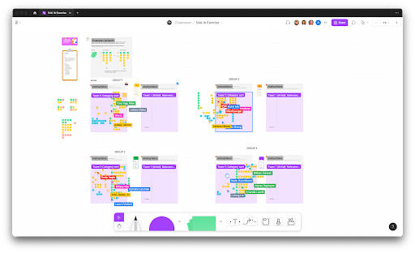
We then broke into diverse groups to conduct separate card sorts of all these items — letting us see how product teams thought their content was grouped within the larger ecosystem.
- Many teams organized items into families that matched key user workflows (promotion, engaging with fans, earning money, etc.)
- Many sortings pointed to the need for a much more consolidated team management experience at the user level — not mixed in with artist views and actions
- All sortings shared very little resemblance to the current organizational structure
Research with Customers
Multiple stages, diverse customers
Getting feedback from as diverse a set of customers as possible was pivotal to creating an IA and navigation that resonated across all our customer groups. My role in research was helping craft our objectives and discussion guide, creating testing materials (mockups, digital card sorts, prototypes), and helping synthesize findings. The senior UX researcher was the research lead throughout.
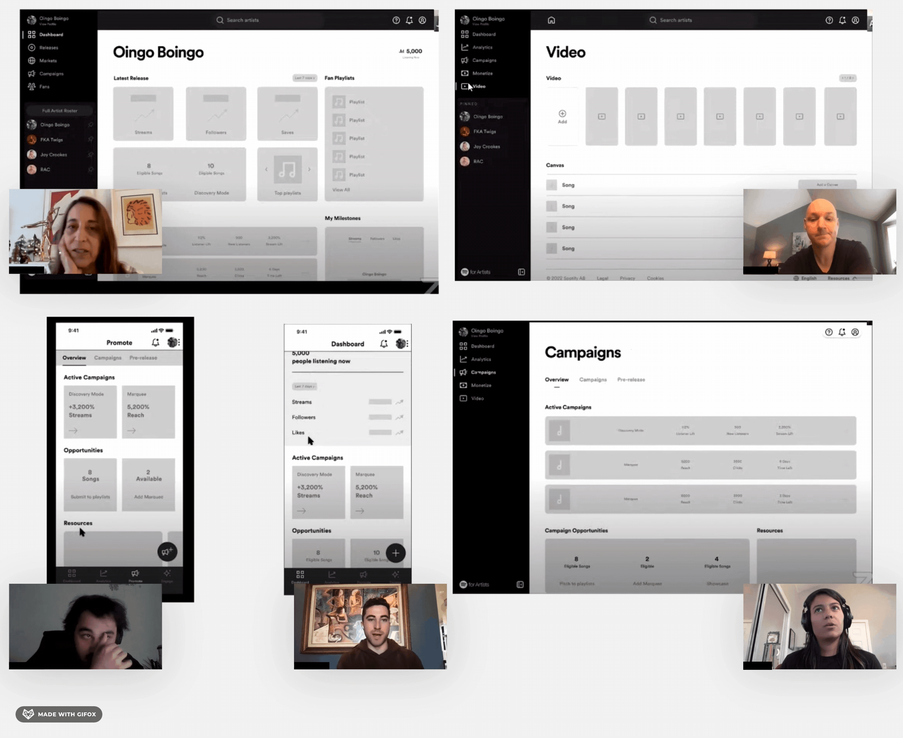
Stage 1
Generative research
We had customers perform an open card sort of items in the current IA — capturing and understanding their mental models and key workflows. It was also a jumping-off point to talk about how they use our tools today and where they'd like to see them evolve. We also created tree tests to quickly check how our team's understanding of item groupings matched our customers', letting us move faster and with greater certainty.
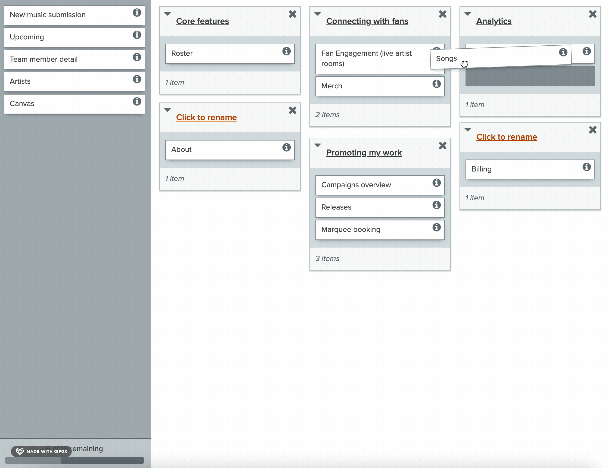
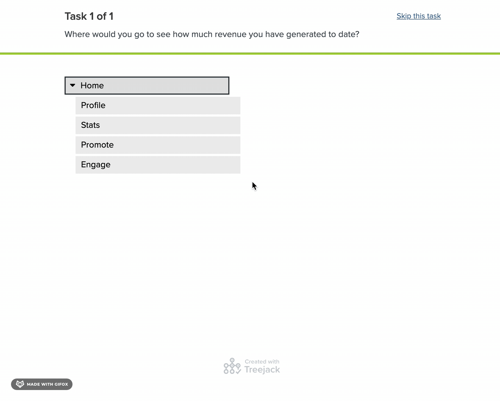
Stage 2
Survey of 1,000 customers
We surveyed 1,000 customers (.001% of the user base) to capture a wider range of mindsets and understand what their top tasks in S4A were — so our IA could be as adaptive to those workflows as possible.
From the 1,000 sampled, the top tasks customers perform in S4A were:
- Release. Planning releases and boosting streams and growing awareness for music.
- Analyze. Track and understand performance metrics.
- Engage. Build fandom by engaging with fans.
Stage 3
Evaluative research — two tracks
Top nav vs. side nav. Our research team ran tests with 8 S4A customers — 4 representing a single artist, 4 representing medium to large labels. The side navigation was the clear winner. Labels understood how it would create greater ease managing multiple artists. Single-artist teams found it simpler and more straightforward.
New IA structure (2 rounds, 22 sessions). Across the two rounds, we ran 9 artist teams, 7 labels, and 6 managers. The first round validated the accuracy of our groupings and naming as they related to workflows. The second was driven heavily by UX writing — ensuring the specific naming had high resonance across all customer groups.
Full Site Flow Diagram
Mapping what nobody had mapped before
One crucial gap: nobody held the wisdom of what the site architecture actually looked like today. With my background in service design, this was an area I was able to lead not just for my team but for the entire organization that builds into Spotify for Artists.
Innovation at an IA level requires a deep understanding of the system itself. By mapping the entire architecture, our team was able to collaborate more deeply with partners, plan for future growth with greater certainty, and give partner teams clear insight to support their own product innovation. There are two versions — an as-is state and an evolving blueprint for teams to use as they scale and make changes.
Exploration
Many iterations. Many hard questions.
The navigation went through many iterations. This process deconstructed and reconstructed elements, questioned the reasoning behind decisions, and stress-tested every assumption. What happens if we removed the top nav entirely? What are the essential workflows? How do we decouple user-level actions from artist-level actions?
Fidelity started with sketches to quickly understand the range of directions we could go. When testing with customers, we kept fidelity intentionally low — so conversations stayed focused on their workflows, not on polished visuals.
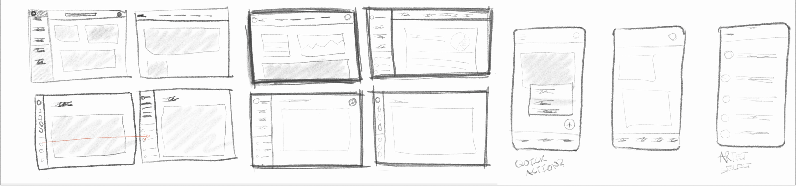
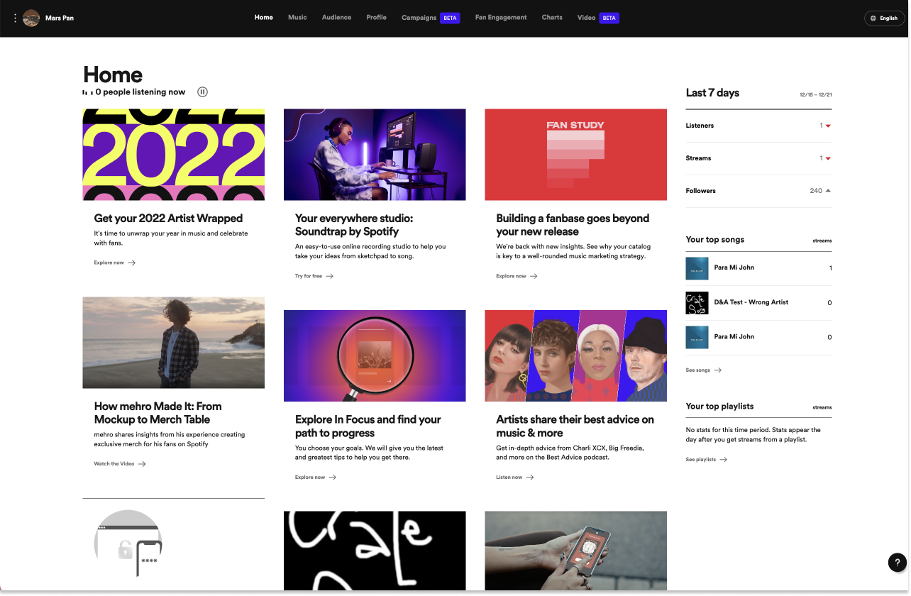
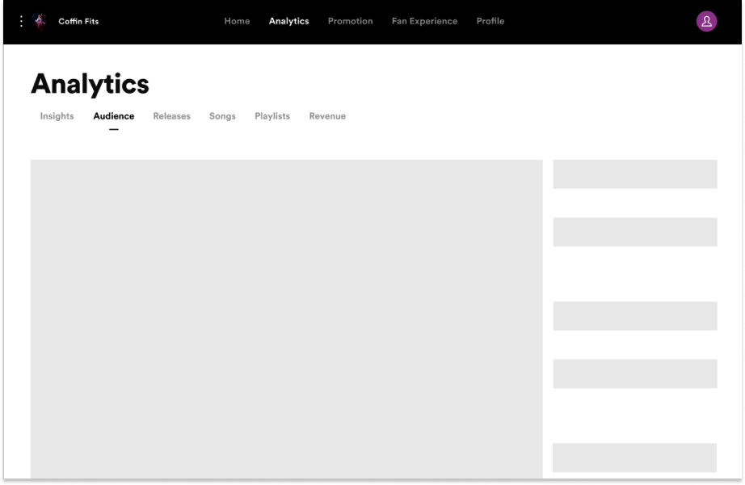
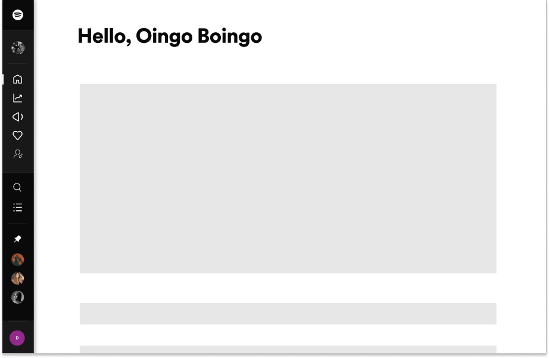
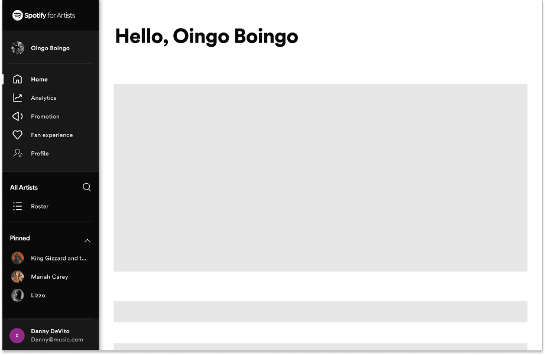
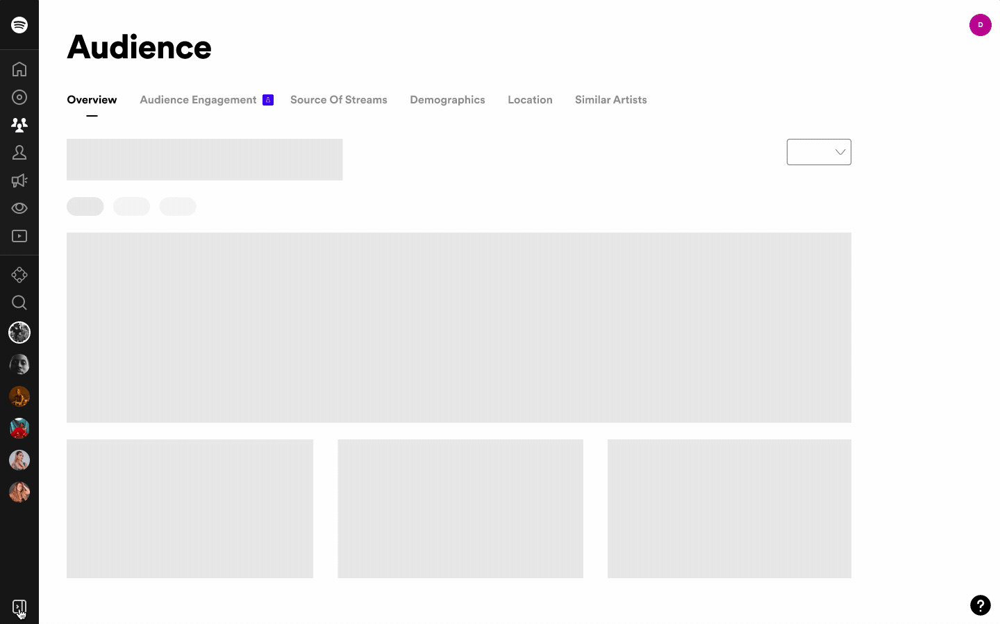
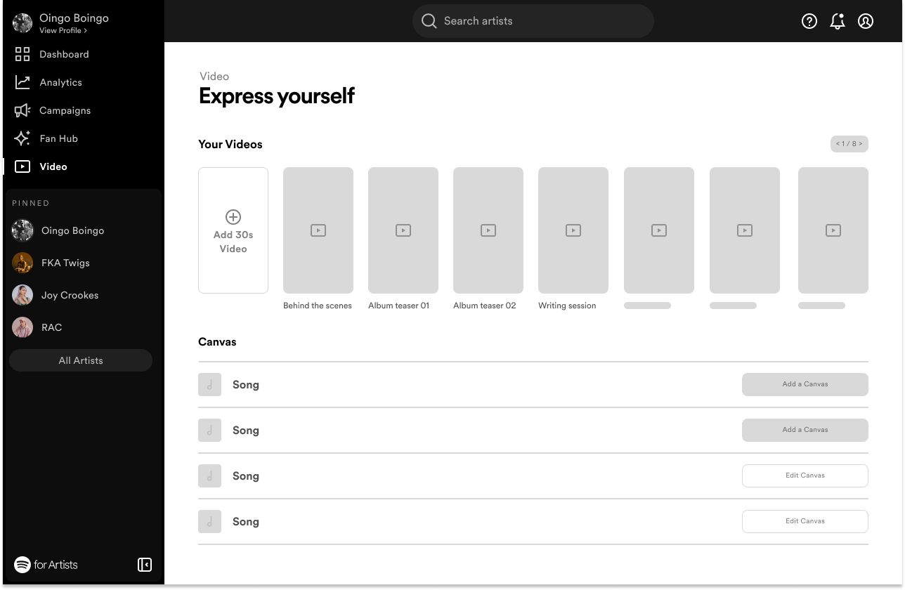
Key Decision
Switching from a top nav to a side nav
Many early iterations still featured a top nav. But through collaboration with teams across the org and deeper understanding of customer workflows, it became clear that a top nav simply wouldn't scale. In the coming years, Spotify for Artists would grow meteorically — introducing new suites and families of tools. Even after culling and consolidating the current navigation, the top nav had a clear expiration point where it would break.
Moving to a side nav also freed up that top space for more global features: search, help, and user settings.
Collaboration with UX Writing
Content strategy as a core design pillar
A huge component of this work was content strategy — thinking critically about how to create greater resonance with our content and families of content. Through our learnings, we developed key heuristics for each layer of content in the IA. Below are our guiding principles for primary navigation items:
- Must encompass a unique suite of features, not just one tool
- No unique feature names — must use familiar terms
- Must not reflect internal org structures
- Must be relevant and actionable for artists of all tiers
- Must be frequently used on a weekly basis, in all seasons
- Must be under ~10 characters to comply with accessibility standards and iOS/Android space limits
Validation
A 10–50–100% rollout
Significant changes to IA and navigation can cause major customer upheaval. To reduce that risk, we did a controlled rollout: a small set of customers first, then half, then everyone. With any IA or nav redesign, you actually expect to see a negative engagement trend as customers adapt to the new landscape. To our surprise, we didn't see any significant drop in engagement or number of actions taken. Qualitatively, customers told us that finding things had improved significantly.

Final Primary Navigation Images
Comparison

Old nav and IA
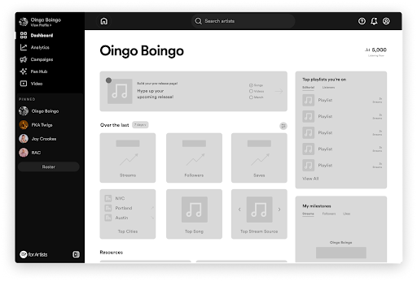
New nav and IA

Final Primary Navigation
What made the cut
01 Analytics
Tools that help customers better understand their metrics and audience.
02 Dashboard
The central landing showing high-level summary and learning material, soon to evolve into a surface that surfaces relevant actions and information across S4A.
03 Campaigns
Tools that empower customers to broaden their audiences and revenue from Spotify.
04 Video
Tools that add depth to the listening experience through visuals.
05 Fan Hub
Tools that help customers engage with fans.
Next Steps
A platform built to scale
Artist dashboard. Now that we have an IA and navigation that can scale well into Spotify's future, the central focus is on how we better push content to customers. The current home page pushes mostly marketing material — and customers are nearly unanimous: the surface they land on when they log in is completely useless. This is a huge opportunity to reimagine what "home" means for our customers.
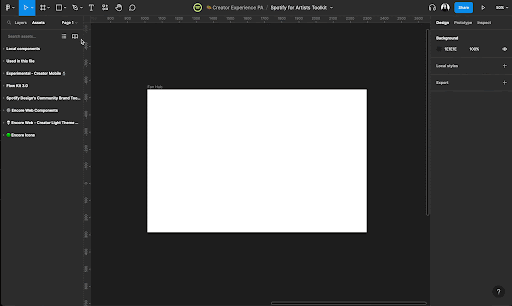
Multi-artist home. In our prototypes for this phase we've already begun exploring the multi-artist experience. The next phase involves significantly more fidelity on those explorations and testing them with large labels.
Creating templates. With the navigation updates underway, we've begun componentizing our designs so they're reusable for the other product teams that build into Spotify for Artists — including updated nav components and a refreshed grid system for greater consistency across teams.